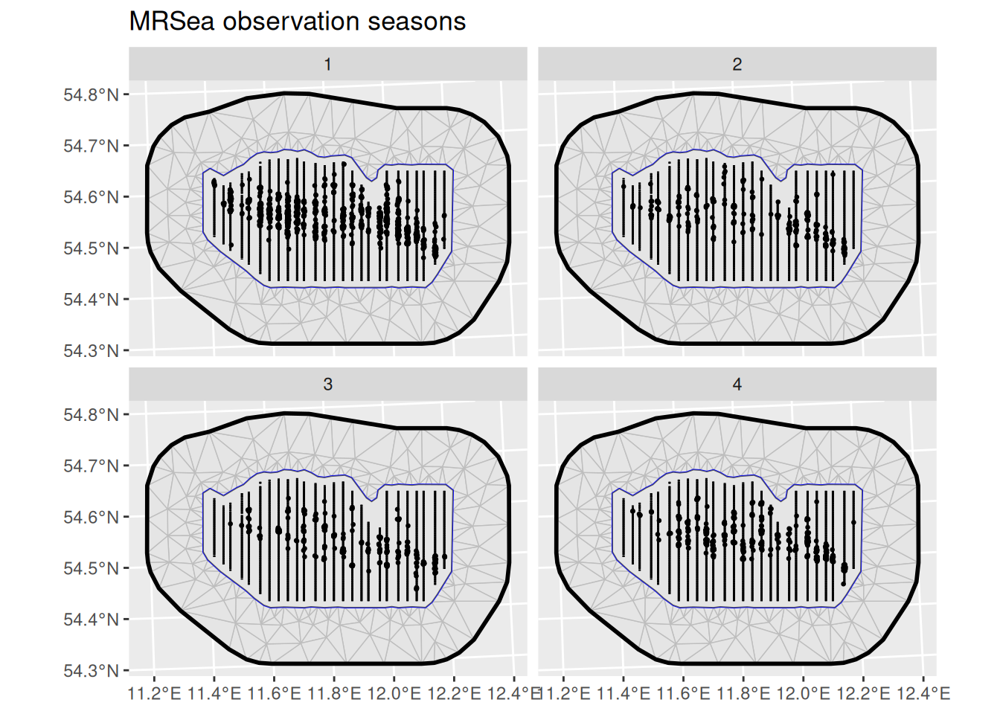
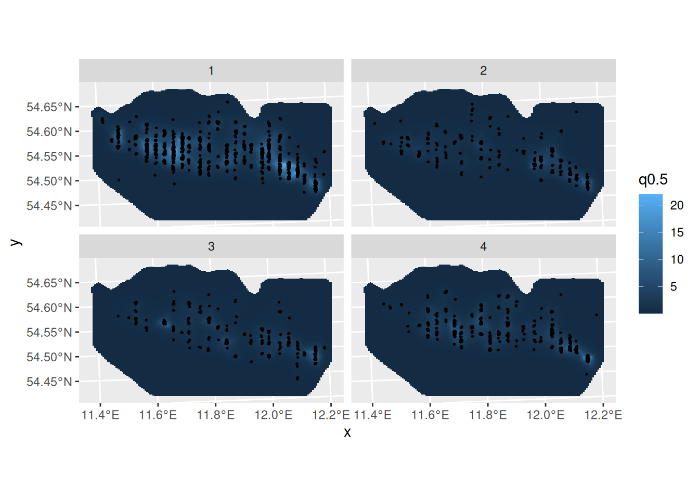

LGCPs - An example in space and time
Fabian E. Bachl and Finn Lindgren
Generated on 2025-05-19
Source:vignettes/lgcp_2d_spatiotemporal.Rmd
lgcp_2d_spatiotemporal.RmdIntroduction
For this vignette we are going to be working with a dataset obtained
from the R package MRSea. We will set up a
LGCP with a spatio-temporal SPDE model to estimate species
distribution.
Get the data
Load the dataset, that has coordinates in UTM in kilometres:
mrsea <- inlabru::mrseaThe points (representing animals) and the sampling regions of this dataset are associated with a season. Let’s have a look at the observed points and sampling regions for all seasons:
ggplot() +
geom_fm(data = mrsea$mesh) +
gg(mrsea$boundary) +
gg(mrsea$samplers) +
gg(mrsea$points, size = 0.5) +
facet_wrap(~season) +
ggtitle("MRSea observation seasons")
Fitting the model
Fit an LGCP model to the locations of the animals. In this example we
will employ a spatio-temporal SPDE. Note how the group and
ngroup parameters are employed to let the SPDE model know
about the name of the time dimension (season) and the total number of
distinct points in time. The point process likelihood is constructed by
the lgcp() function, which is a wrapper around the
bru_obs(..., model = "cp") and bru()
functions. Like for ordinary spatial point process models, the
samplers argument specifies the observation region/set, in
this case combinations spatial lines and seasons. The
domain argument specifies the spatio-temporal function
space to use when constructing the numerical integration scheme needed
for the point process likelihood evaluation.
matern <- inla.spde2.pcmatern(mrsea$mesh,
prior.sigma = c(0.1, 0.01),
prior.range = c(10, 0.01)
)
cmp <- ~ Intercept(1) +
mySmooth(
geometry,
model = matern,
group = season,
ngroup = 4
)
fit <- bru(
cmp,
bru_obs(
geometry + season ~ .,
family = "cp",
data = mrsea$points,
samplers = mrsea$samplers,
domain = list(
geometry = mrsea$mesh,
season = seq_len(4)
)
)
)Predict and plot the intensity for all seasons:
ppxl <- fm_pixels(mrsea$mesh, mask = mrsea$boundary, format = "sf")
ppxl_all <- fm_cprod(ppxl, data.frame(season = seq_len(4)))
lambda1 <- predict(
fit,
ppxl_all,
~ data.frame(season = season, lambda = exp(mySmooth + Intercept))
)
pl1 <- ggplot() +
gg(lambda1, geom = "tile", aes(fill = q0.5)) +
gg(mrsea$points, size = 0.3) +
facet_wrap(~season) +
coord_sf()
pl1
Integration points
The inlabru point process model, lgcp() or
bru_obs(..., model = "cp"), knows how to construct the
numerical integration scheme for the LGCP likelihood. To see what
happens internally, we can also call the internal functions directly to
see what the integration scheme will look like, using the
fm_int() function with the same domain and
samplers arguments as in the previous lgcp()
call. Note that omitting the season dimension from
domain would lead to aggregation of all sampling regions
over time.
Plot the integration points:
ggplot() +
geom_fm(data = mrsea$mesh) +
gg(ips, aes(size = weight)) +
scale_size_area(max_size = 1) +
facet_wrap(~season)